install.packages("maps")12 Mapping
In this section, we continue with the goal of discovery, this time using maps to visualize data.
- Describe and measure
- Has the U.S. population increased?
- Explain, evaluate, and recommend (study of causation)
- Does expanding Medicaid improve health outcomes?
- Predict
- Who will win the next election?
- Discover
- How do policies diffuse across states?
Our goals
- Visually communicate social science information using maps
- Learn how to use the
library(maps)package withlibrary(ggplot)(QSS 5.3.2) - Discover patterns in our spatial world!!
Along the way, we will learn to merge data and use the %in% function.
12.1 Why maps
How might maps be useful for political scientists? What are examples of questions maps can help answer?
“The visualization of spatial data through maps enables researchers to discover previously unknown patterns and present their findings in a convincing manner.” - Kosuke Imai, Chap 5 QSS

National Geographic. Mapping fatal cholera cases helped John Snow uncover the source of a cholera outbreak in London to an infected water pump in 1854.
Why are maps used in political science
- Show diffusion of a disease, policies, political power
- Show demographic patterns
- Examine clustering, regional patterns of different policies, events, etc.
- Shift analysis away from an individual person or political unit to instead think about the broader social and political context
- Convey a lot of information efficiently, and in an engaging way, using intuitive heuristics of commonly known geographic locations
Most maps are also inherently political! (e.g., historical trends in political boundaries, which geographic entities are recognized, etc.)
Maps themselves may be the subject of interest. For example, we are currently in redistricting to determine the boundaries used for different elections in the U.S.
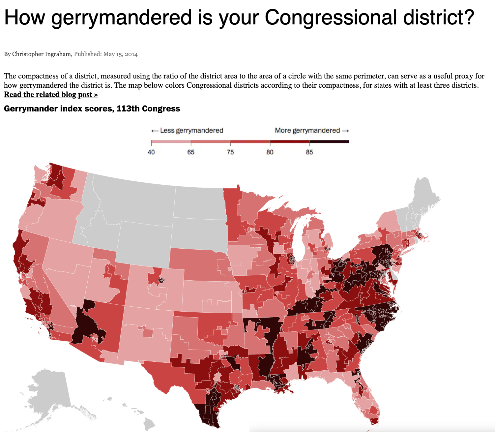
12.1.1 To map or not to map?
If I wanted to track COVID vaccinations by state, what are the pros and cons of using a table vs. a map? See this example from the Mayo Clinic.
 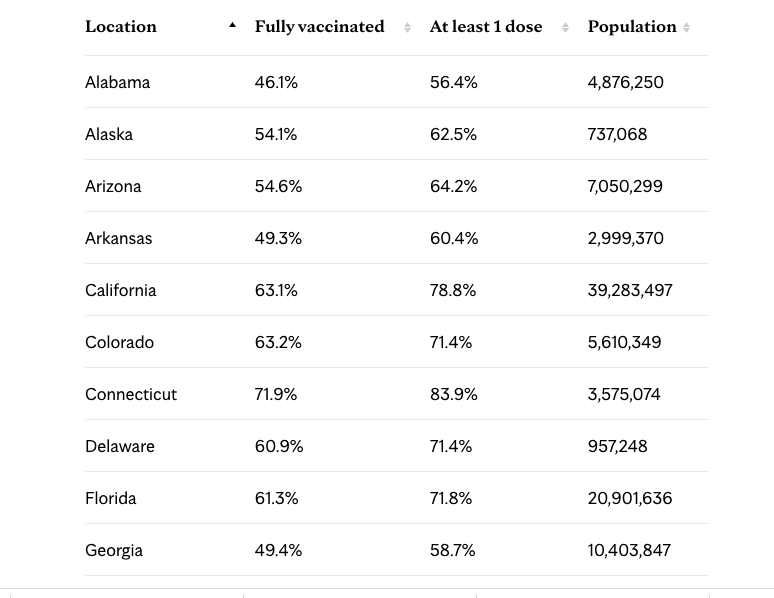
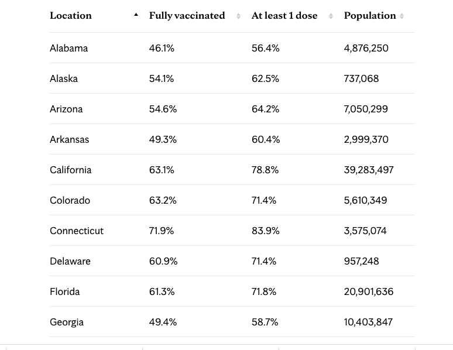
Can maps be misleading? See this discussion from Kieran Healy in Chap. 7: Each of these maps shows data for the same event, but the impressions they convey are very different … Often, a map is like a weird grid that you are forced to conform to even though you know it systematically misrepresents what you want to show.”
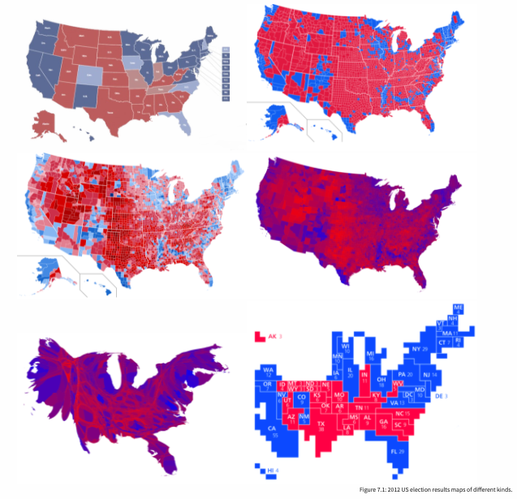
12.2 Mapping in R
For a video explainer of the code for similar applications with maps and color, see below. (Via youtube, you can speed up the playback to 1.5 or 2x speed.)
Install maps package. You only need to do this one time.
All subsequent times, you just need to use library()
library(maps)The map command is like a plot. It maps a particular entry from a database. Below are a few examples of types of maps that come readymade in the package.
map(database = "world")
map(database = "usa")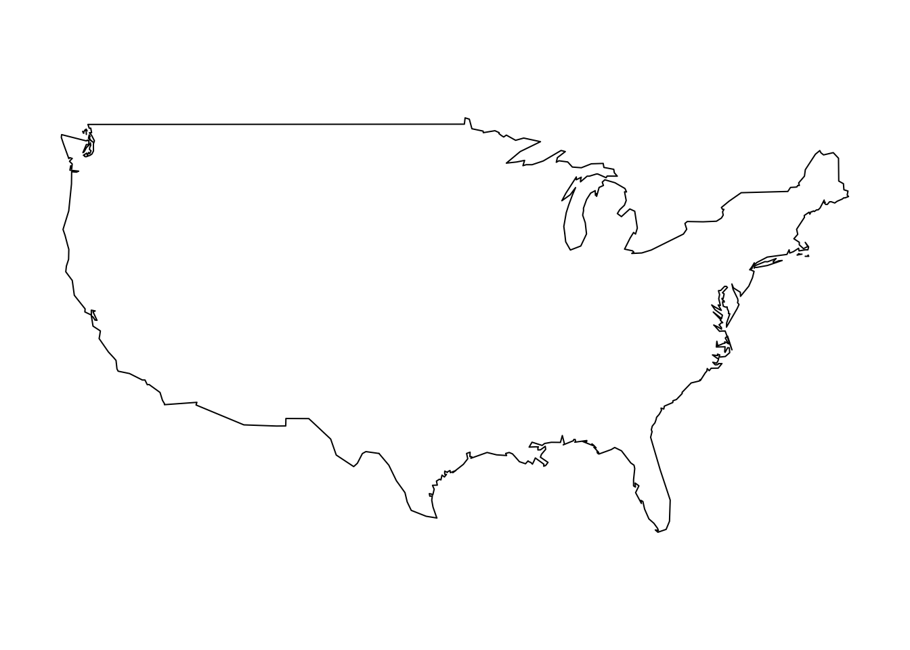
map(database = "state")
map(database="county")
You can also map particular regions within a database.
map(database = "state", regions= c("New Jersey", "New York" ))
map(database="county", regions = "Nebraska")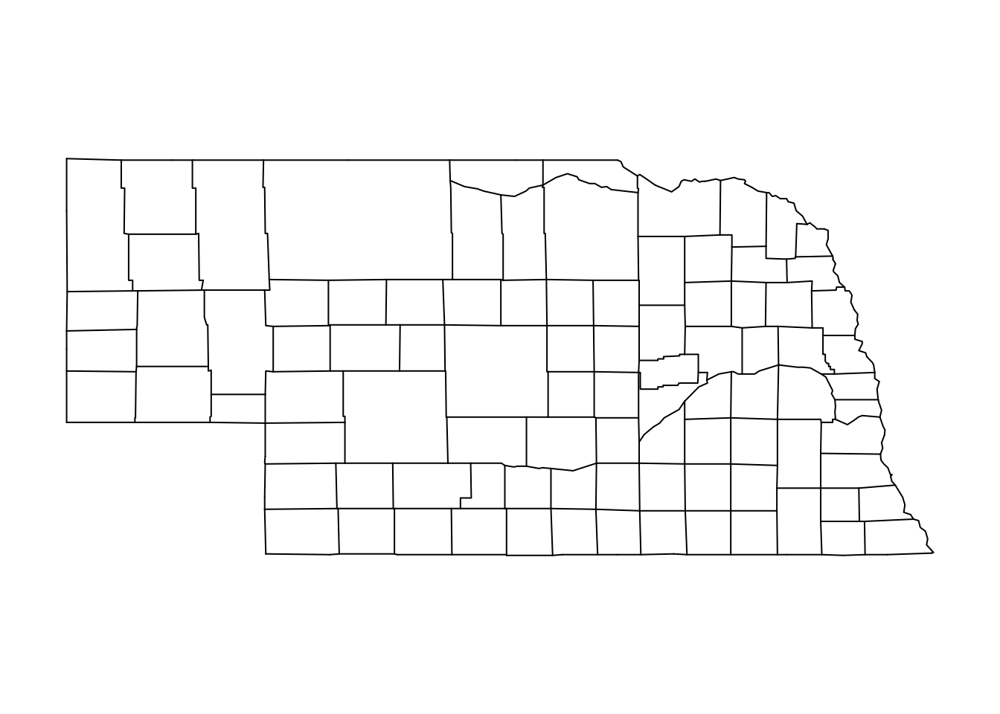
map(database = "world", regions= "Italy")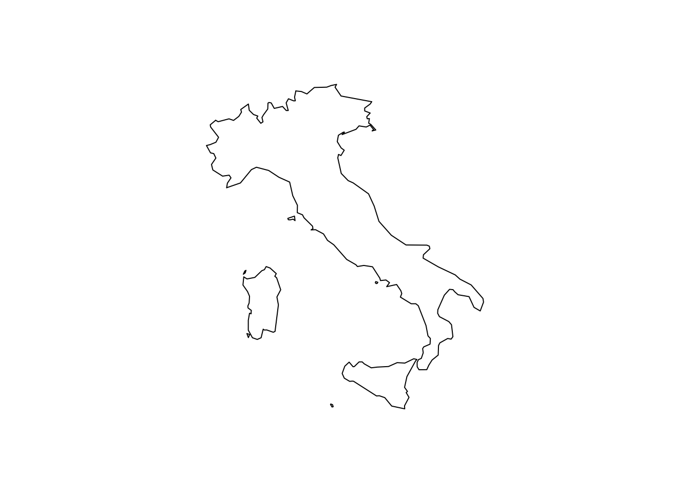
12.2.1 Using ggplot2 with maps
We may want to embed map in another plotting device that more easily adds informative labels, colors, and other information.
- While the plotting tools we have worked with before can do this, the function
ggplothas a better interface that will more easily help us avoid mistakes, such as putting a label in the wrong place.
install.packages("ggplot2")Open the packages each time you want to use them.
library(ggplot2)The “gg” stands for “grammar of graphics.” The ggplot2 package has a very general function ggplot() that provides another system of visualizing data in R.
- It can be used to plot all kinds of visuals, including scatterplots, barplots, histograms, etc.
- We are going to focus on its utility for plotting maps, as many new developments in mapping and GIS (geographic information systems) in R use this interface.
- In
ggplot()you add layers to a plot by using+between lines - While
ggplot()can be applied very widely, we will focus on a more narrow set of applications for mapping.
We will create a map of New Jersey. Similar to before, we will first use a function to pull up map data about U.S. states. The map_data function pulls up just the data instead of making the map itself.
nj_map <- map_data("state",regions= c("New Jersey"))We also directly integrate the data into the plotting function
## Begin plot
ggplot() + #Note the use of the + sign between each line
geom_polygon(nj_map, mapping=aes(x=long, y=lat, group=group),
colour="black")+
## add title
ggtitle("Map of New Jersey")+
## adjust projection
coord_quickmap() +
## remove background
theme_void() # note: last line does not end with a +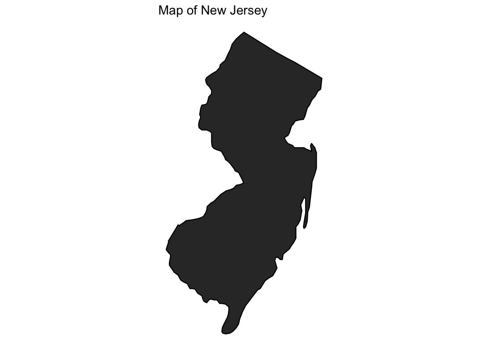
12.3 Choropleth Maps
Sometimes maps use shading of polygons to display quantitative information about a geographic unit or qualitative information about what geographical units belong to different categories of a variable. We provide an example of this here.
- We are going to add a variable to our mapping data that we want to visualize
- We
fillthe plot usinggeom_polygonand can (optionally) indicate specific colors
usmap <- map_data("state")
usmap$nj <- ifelse(usmap$region == "new jersey", "Cannot turn left",
"Can turn left")
usmap$nj <- as.factor(usmap$nj)
ggplot()+
## Note the fill= nj
geom_polygon(data=usmap, aes(x=long, y=lat, group=group, fill=nj))+
## we can indicate colors for each category of the nj variable
scale_fill_manual(values = c("gray", "red3"), name="Left Turns")+
theme_void() +
ggtitle("Geography of Left Turns")+
coord_quickmap()
12.4 Application: 2021 NJ Election Results
We sometimes get data from an outside source. We then need to figure out how to connect it to the mapping data.
njcounties <- map_data("county", region="New Jersey")
## 2021 county election results
murphyvote <- data.frame(county = unique(njcounties$subregion),
murphy = c(43.92, 52.52, 53.28, 61.69, 36.69, 43.64,
73.96, 44.63, 73.56, 40.19, 65.09,
55.74, 40.31, 44.06, 31.79, 51.47,
35.01, 51.54, 31.93, 61.56, 34.56))We can use merge() to do so by indicating a shared unique identifier that the dataframes have in common. Note that subregion is the name of the county variable in the first dataframe (the x) and county is the name of the county variable in the second dataframe (the y). For this to work, we had to first make sure the county names are formatted exactly the same way in both dataframes. For example, R won’t known “camden” and “Camden” are the same. They have to exactly match for R to be able to properly join the data together. With messier data, you might have to rename some variable values prior to joining data in a merge, such as by changing the case of letters or adjusting punctuation, etc.
- For more information on merging, see QSS chapter 4.2.5 or this explainer.
njcounties <- merge(njcounties, murphyvote,
by.x="subregion", by.y = "county",
all.x=TRUE, all.y=F)Now that the data are merged, we can add Murphy’s vote share as a color.
ggplot()+
## create an nj county-level plot
geom_polygon(data=njcounties, aes(x=long, y=lat,
group=group,
fill=murphy),
colour="white")+
## Shade the map according to the vote share
scale_fill_gradient(name="Murphy's Vote Share %", low="red", high="blue")+
## remove background
theme_void()+
ggtitle("2021 NJ Governor Results by County")+
coord_quickmap()
Could you update this for the 2025 election results?
12.5 Application: Voter Identification Laws
According to the NCSL, 36 states have laws requesting or requiring voters to show some form of identification at the polls.
- The presence of voter ID laws and the strictness of these laws has accelerated over the past decade.
- We will look at the geography of these laws to see if there are regional or other political patterns to these

12.5.1 Using the %in% function
Detecting if something is contained within a vector: The function %in% asks: is this contained in the vector? Yes/No
"new jersey" %in% c("new jersey", "california", "nebraska")[1] TRUE"florida" %in% c("new jersey", "california", "nebraska")[1] FALSE(! "florida" %in% c("new jersey", "california", "nebraska")) # not in[1] TRUEWe will augment our map data with a new variable that classifies states according to their voter ID laws.
usmap <- map_data("state")
head(usmap) long lat group order region subregion
1 -87.46201 30.38968 1 1 alabama <NA>
2 -87.48493 30.37249 1 2 alabama <NA>
3 -87.52503 30.37249 1 3 alabama <NA>
4 -87.53076 30.33239 1 4 alabama <NA>
5 -87.57087 30.32665 1 5 alabama <NA>
6 -87.58806 30.32665 1 6 alabama <NA>## initialize variable
usmap$photoidlaws <- NA
usmap$photoidlaws[usmap$region %in% c("arkansas","georgia", "indiana", "kansas",
"mississippi","new hampshire", "north carolina", "ohio",
"tennessee", "wisconsin")] <- "Strict Photo ID"
usmap$photoidlaws[usmap$region %in% c("alabama", "florida", "idaho", "kentucky", "louisiana",
"michigan","missouri", "montana","nebraska", "rhode island", "south carolina",
"south dakota", "texas", "west virginia")] <- "Non-Strict Photo ID"
usmap$photoidlaws[usmap$region %in% c("arizona", "north dakota", "wyoming")]<- "Strict Non-Photo ID"
usmap$photoidlaws[usmap$region %in% c("alaska", "colorado", "connecticut", "delaware", "hawaii",
"iowa", "oklahoma", "utah",
"virginia", "washington")] <- "Non-Strict Non-Photo ID"
usmap$photoidlaws[usmap$region %in% c("oregon", "nevada","california", "new mexico",
"minnesota", "illinois", "pennsylvania",
"new mexico", "new york", "new jersey", "massachusetts", "vermont",
"maryland", "district of columbia", "maine")] <- "No Document Required"
## Make it a factor categorical variable
usmap$photoidlaws <- as.factor(usmap$photoidlaws)Let’s create a map of the U.S. We will then annotate the map with information about voter identification laws.
ggplot()+
geom_polygon(data=usmap, aes(x=long, y=lat, group=group,
fill=photoidlaws),
colour="black")+
## palette lets you pick a color scheme without specifics
scale_fill_brewer(palette="Greens", name="Photo ID Laws")+
theme_void() +
ggtitle("Map of U.S. Voter ID Laws")+
coord_quickmap()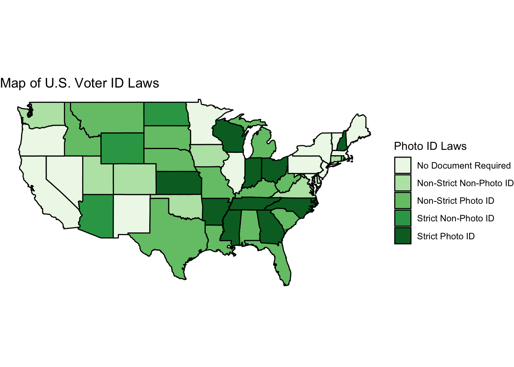
12.6 Your turn to map
Make a choropleth plot of the United States or some other geographic unit.
- Create a map of a geographic area of interest (e.g., a map of U.S. states)
- Shade the states according to a numeric or categorical variable you add to the data
- Has a particular state/set of states adopted a policy?
- Does a particular state/set of states embody a certain characteristic?
- Share the map on Piazza
12.7 Application: Terrorist Attacks in France
Political scientists study a wide range of questions related to terrorism, including how targets end up being selected, how to predict and defend against attacks, what types of incidents the public considers to be terrorism, how attacks influence public attitudes, and responses to terrorism from government and other actors.
- Why might mapping visualizations and spatial data be useful to political scientists for these questions?
12.7.1 Adding points to a map
For a video explainer of the code for the applications with maps and points, as well as animating these points in the subsequent section, see below. (Via youtube, you can speed up the playback to 1.5 or 2x speed.)
In this application, we use the Global Terrorism Database to visualize where terrorist attacks (including failed attacks) have occurred in recent years in France.
- We will make a map of France using
map_datato get the polygon information
library(maps)
library(ggplot2)
## get france data (not available for all countries)
france <- map_data("france")
## Plot France
ggplot()+
geom_polygon(data=france, aes(x=long, y=lat, group=group), fill="white", colour="gray")+
ggtitle("Terrorist Attacks in France 2000-2019")+
coord_quickmap()+
theme_void()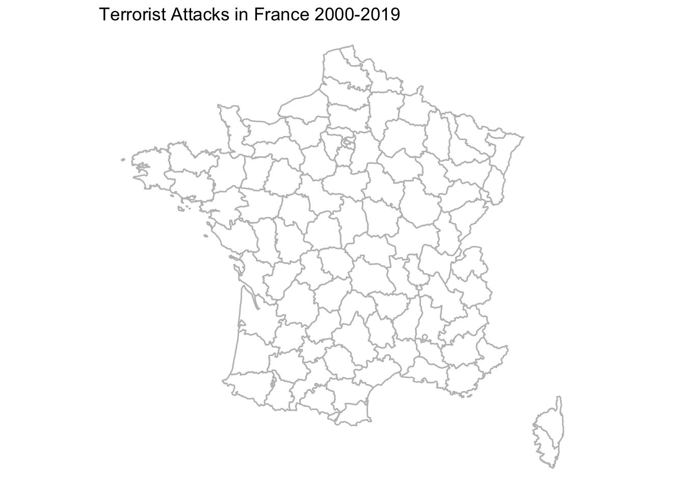
- We load separate data that includes the latitude and longitude of attacks
load("gtb.RData")## Let's look at only recent attacks
gtbfrance <- subset(gtb, iyear > 2000 & country_txt=="France")- We use
geom_pointto add a layer of points from this dataset- We can colour or size the points by additional variables in the data
ggplot()+
geom_polygon(data=france, aes(x=long, y=lat, group=group), fill="white", colour="gray")+
## add points with size in proportion to fatalities
geom_point(data=gtbfrance, aes(x=longitude, y=latitude, size=nkill),
alpha=.4, colour="red")+ # alpha makes points transparent
## range specifies how big or small you want points to be
scale_size(name="Number of Fatalities", range=c(2, 10))+
ggtitle("Terrorist Attacks in France 2000-2019")+
coord_quickmap()+
theme_void()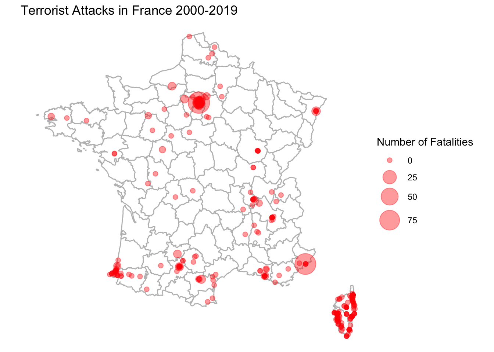
- We can also add labels to the plot with
geom_text_repelfrom theggrepelpackage- Note that we can use labels from yet another object so long as we have the right lat and long
install.packages("ggrepel")library(ggrepel)
## Let's add labels for the biggest attacks only
gtbmajorfrance <- subset(gtbfrance, nkill > 75)
ggplot()+
geom_polygon(data=france, aes(x=long, y=lat, group=group), fill="white", colour="gray")+
## add points with size in proportion to fatalities
geom_point(data=gtbfrance, aes(x=longitude, y=latitude, size=nkill),
alpha=.4, colour="red")+
scale_size(name="Number of Fatalities", range=c(2, 10))+
## add labels from gtbmajorfrance
geom_text_repel(data=gtbmajorfrance, aes(x=longitude, y=latitude,
label=city), size=4,
max.overlaps = 30)+
ggtitle("Terrorist Attacks in France 2000-2019")+
coord_quickmap()+
theme_void()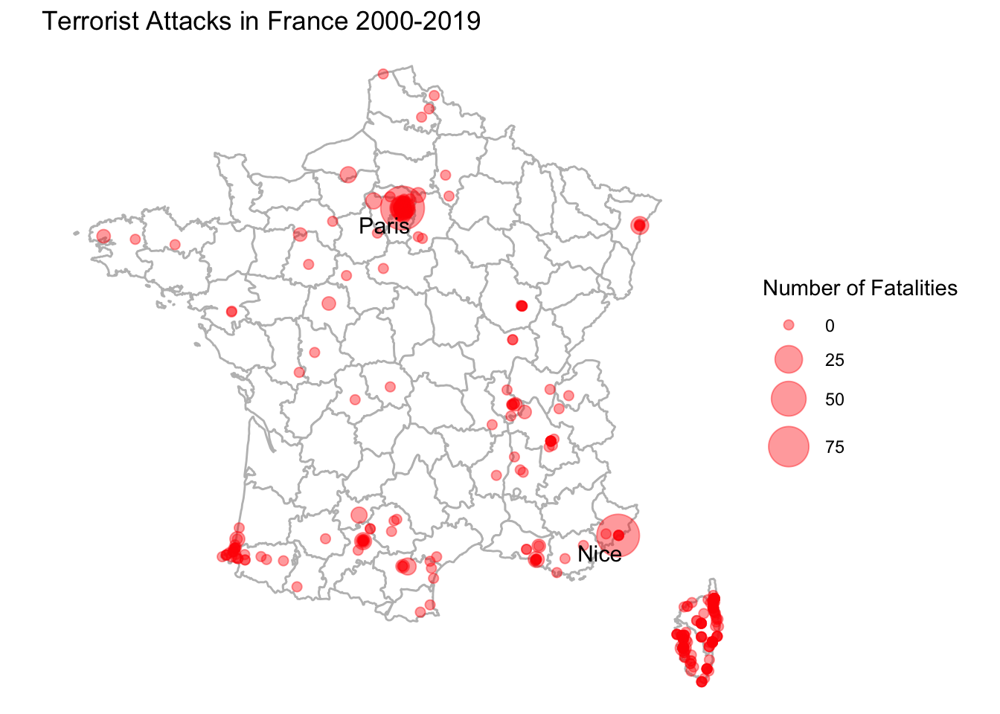
12.8 Animating Data
With R, we can go a step further to make our maps more interactive. RStudio and R allow for the ability to turn graphics into interactive applications, as well as animate visualizations to reveal or change the visual over the course of different frames. We will take a brief look at these applications.
Why would we want to do this? An engaging way to reveal changes over time or other states. Adding a bit of drama to presentations.
We will use the package gganimate for this. Install and load the package.
install.packages("gganimate")library(gganimate)To animate a ggplot, we just add an argument to indicate the variable that dictates the transition between different states, in this case, the date variable, iyear. The other parts of the plot stay very similar to before.
ggplot()+
geom_polygon(data=france, aes(x=long, y=lat, group=group), fill="white", colour="gray")+
## add points with size in proportion to fatalities
geom_point(data=gtbfrance, aes(x=longitude, y=latitude, size=nkill), alpha=.4, colour="red")+
scale_size(name="Number of Fatalities", range=c(2, 10))+
ggtitle("Terrorist Attacks in France 2000-2019")+
coord_quickmap()+
theme_void()+
## add the transition and a label for the plot
transition_states(iyear, state_length = 8)+
labs(subtitle = "Current map: {closest_state}")
anim_save("gtbplot.gif")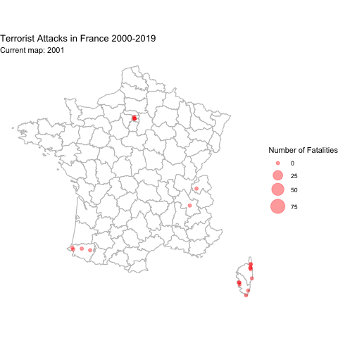
12.9 Application: Spread of Coronavirus
Mapping isn’t the only application where we might want to show an animation. Here is a brief example using ggplot in a different way to reveal trends over time.
We are going to map the spread of confirmed COVID cases based on data from John Hopkins University.
load("covidlongfmt.RData")We have variables case_count and Country.Region along with date_fmt. Let’s compare trends in confirmed cases between Italy and France.
italyspain <- subset(covidlongfmt, Country.Region %in% c("Italy", "Spain"))Let’s divide cases by 1000 to make it easier to visualize.
italyspain$case_count_thousands <- italyspain$case_count /1000With ggplot, this time instead of using geom_polygon, we will use geom_line. Our x-axis will be time, and our y-axis will be the case count.
Again, to animate a ggplot, we just add an argument to indicate the variable that dictates the transition between different states, in this case, the date variable, date_fmt. The other parts of the plot stay very similar to before.
ggplot()+
geom_line(data=italyspain, aes(x=date_fmt, y=case_count_thousands,
colour=Country.Region))+
## Add labels with exact case count
geom_text_repel(data=italyspain, aes(x=date_fmt,
y=case_count_thousands,
colour=Country.Region,
label=case_count_thousands))+
## axis and title labels
ylab("Cases (thousands)")+
ggtitle("Confirmed Cases in Italy and Spain")+
theme_minimal()+
## We use transition_reveal to slowly reveal the trend
transition_reveal(date_fmt)+
labs(x = "Date: {frame_along}")
anim_save("italyspain.gif")
12.9.1 Mapping Animation with World Map
Just like with the terrorism data, we can make a map with the data, too.
To illustrate the process, let’s create a plot for just one day: 2020-03-01.
covidmarch <- subset(covidlongfmt, date_fmt == "2020-03-01")We create a world map and add points to indicate the case count, with the size proportionate to the count. We include alpha to make the points transparent.
world <- map_data("world")
ggplot()+
## create the world map
geom_polygon(data=world, aes(x=long, y=lat, group=group), colour="black", fill="white")+
## add points
geom_point(data=covidmarch, aes(x=Long, y=Lat, size=case_count), alpha=.4, colour="red")+
scale_size(range = c(-1,10)) +
## aesthetics
ggtitle("COVID-19 Confirmed Cases on March 1, 2020")+
coord_quickmap()+
theme_void()Warning: Removed 2 rows containing missing values or values outside the scale range
(`geom_point()`).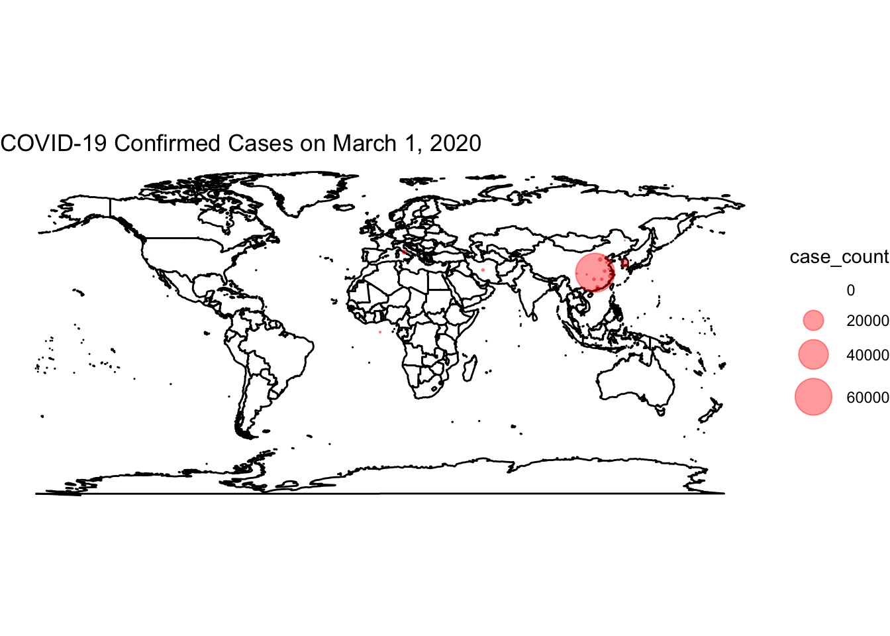
Now, we use the full data and transition through the date variable. We then “render” and save the animation.
world <- map_data("world")
ggplot()+
## create the world map
geom_polygon(data=world, aes(x=long, y=lat, group=group), colour="black", fill="white")+
## add points
geom_point(data=covidlongfmt, aes(x=Long, y=Lat, size=case_count), alpha=.4, colour="red")+
scale_size(range = c(-1,15)) +
## aesthetics
ggtitle("COVID-19 Confirmed Cases")+
coord_quickmap()+
theme_void() +
## add the transition and a label for the plot
transition_time(date_fmt)+
labs(title="Date: {frame_time}")
## save animation as a gif
anim_save("covidplot.gif")
How could we improve this visualization?
12.10 Application: Territorial Control of Syria
In this article, Anita Gohdes uses data from the Syria Conflict Mapping Project (SCMP), which tracks local communities and determines which conflict party is in control. The author maps which group is in control of different communities in 2014 and 2015, including: opposition forces, Islamic State forces, government forces, and Kurdish forces.
Among other findings, the author shows that group presence influences the degree of targeted repressive violence.
We are going to map the territorial control of Syria at these two time points using the author’s data. Note: the mapping data we use does not come directly from the maps package. Instead the author used “shape files” from an external source, which then can be converted into a dataframe like we get when using map_data.
Let’s load the data. The data have already been converted into the dataframe.
load("SYmapd.RData")A second dataset includes information about territorial control. Let’s also load that data.
load("mapdata.RData")We can create a map.
ggplot()+
## use shape data
geom_polygon(data=SYmapd, aes(x=long, y=lat, group=group),
fill="white", color="gray") +
## add points with map data
geom_point(data=mapdata, aes(x=longitude, y=latitude, color=group), alpha=.3)+
scale_color_manual("",values=c("red", "black", "purple", "blue"))+
theme_void()+
## add animation
transition_states(date, transition_length = .25, state_length = 3)+
labs(title = "Current map: {closest_state}")
anim_save("syriamap.gif")